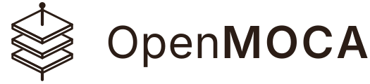
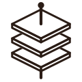

Introduction to OpenMOCA
Portable grounding for AI
12 November 2026 · openmoca.org
Pete Cleary
Creator of OpenMOCA
Agentic AI Architect. 25 years in learning technology and business strategy.
github.com/openmoca
Connect on LinkedIn
Can you check where your AI’s answer came from?
- Which version said it
- Who published it
- Whether anyone checked it
- Whether it still applies
Knowledge for AI is often locked in, and hard to check
Locked in one pipeline
Chunked, embedded and stored for one product.
Often rebuilt for each model, vendor and pipeline.
Hard to check
Structure and sources are often lost on the way in.
Few answers say which version of which page they rest on.
Hard to prove
Changed since it was approved?
Still in force? Superseded?
Most pipelines can’t tell you.
So how do we resolve this?
Package the knowledge,
not the pipeline.
Not another model, vector store or agent framework.
An open standard for portable grounding for AI.

Modular
the package
Build it once, use it anywhere.
Not locked into one pipeline.
Combine packages, each pinned by its digest.
Ontology
the structure layer
From a simple list of topics to a full OWL ontology.
W3C SKOS at its core.
Search stays in scope.
Optional
Content
the content and evidence
One Markdown node per topic.
Validity windows, audiences and translations.
Every answer points back to its source.
Open Knowledge Format
Attestation
the trust through all three
One digest covers every file, so any change shows.
Signatures prove who published it, and who checked it.
Signing optional
Where it helps
Sharing knowledge for grounding
Package it once; any assistant, model or framework grounds on it.
In the demo: Kubernetes, 1,653 pages
Manuals and procedures
Steps in order, the checks that come first, cited to the PDF page.
In the demo: FAA handbook, HSE guidance
Law and regulation
Only the version in force, with the exact clause cited.
In the demo: Data Protection Act 2018
Courses, talks and video
Lessons in order; every answer opens the video at the moment.
In the demo: a course and a talk
Customer support knowledge
AI drafts kept apart from what a person checked; internal answers stay internal.
In the demo: Acme Support
Audit and regulated AI
A record of exactly which content each answer used, long after the index is rebuilt.
In the demo: every citation record
DEMO 1
Try OpenMOCA
try.openmoca.org: real packages, in the browser, no account
What you just saw
- Search, with no accountLexical, semantic or hybrid, side by side, with no AI model.
- Open every result at its sourceThe passage marked in place; a video opens at the moment.
- Use the structureSearch within a topic, and see what it builds on.
- Check, don’t trustThe digest, the signer, the findings, the indexes.
- Ask it questionsEvery answer cites the package; a citation opens the source.
A package, in three layers

acme-support/ moca.json id, version, licence content/ the pages sources/ the originals structure.ttl the ontology attestations/ signatures, reviews acme-support.moca the same, one file acme-support.bge-small-en-v1.5.moca.idx.zip a search index
Open tools, from a folder to a signed package
Convert
Markdown, Obsidian, PDF, OpenAPI, YouTube
moca-convertCheck
As a Reader reads it. Pack to one .moca file.
moca-lintSign
The publisher, and reviews of each page.
moca-signIndex
Lexical and semantic, with local models.
moca-indexServe
To any MCP client, on your computer.
moca-mcpThe tools run with npx, nothing to install. The MCP server is one download.
Or let your AI assistant run them: the openmoca agent skill teaches it every tool.
What a Reader gives you
1. Verify
The digest, the signatures against your trust root, and every finding.
2. Search
Lexical, semantic or hybrid, in one call, with the trust rules applied.
3. Cite
Every result is a citation record: the version, who signed and reviewed it, and its evidence.
Three Readers, one conformance corpus: a package reads the same way everywhere.
Every answer comes with a citation record
{
"package": {
"version": "1.0.0",
"digest": "sha256:3fb4f2bb…",
"signed": true
},
"node": {
"title": "Refund window",
"ref": "…/acme-support@1.0.0#returns/refund-window.md"
},
"trust": {
"inForce": true,
"superseded": false,
"attestedReviews": [
{ "signer": "Sam Ortiz", "outcome": "accurate" }
]
},
"evidence": [{
"source": "Acme Customer Terms, section 7",
"exact": "…a full refund within 30 days of delivery.",
"matched": true
}]
}
- Which versionThe package version and digest, and the page.
- Who stands behind itSigned by Acme, reviewed by Sam.
- Is it still trueIn force, and not superseded.
- The sentence it rests onQuoted from the source, and checked.
Your own assistant, over MCP
Claude Desktop: Settings → Extensions → Edit Config
{
"mcpServers": {
"moca": {
"command": "/Users/you/moca/moca-mcp",
"args": [
"--library", "/Users/you/moca",
"--trust-root",
"/Users/you/moca/example-trust-root.json",
"--audience", "public"]
}
}
}Claude Code: one line
claude mcp add moca -- ~/moca/moca-mcp \ --library ~/moca \ --trust-root ~/moca/example-trust-root.json \ --audience public
- Runs on your computerThe provider sees only the passages the assistant asks for.
- Checked firstThe digest and the signatures, every time a package loads.
- Only your audienceInternal, expired and superseded pages stay out of reach.
DEMO 2
Your own assistant
Claude Desktop, with the MOCA MCP server
Works with what you already use
Make it from
- A folder of Markdown
- An Obsidian vault
- PDFs
- OpenAPI documents
- YouTube videos
Use it in
- Claude Desktop
- Claude Code
- VS Code, with GitHub Copilot
- Cursor
- Any local MCP client
Build with
- TypeScript, .NET, Python
- Microsoft Agent Framework
- Microsoft.Extensions.AI
- LangChain
- LlamaIndex
The agent skill: ask Claude, GitHub Copilot or Codex to make, sign, search and cite packages for you.
Make your own package: four commands
npx @openmoca/moca-convert ./docs -o my-docs \ --id https://example.com/moca/my-docs --title "My docs"
npx @openmoca/moca-lint lint my-docs
npx @openmoca/moca-sign sign my-docs --key publisher.pem --keyid publisher
npx @openmoca/moca-index build my-docs -o my-docs.moca.idx \ --model bge-small-en-v1.5
Then read it in your app
npm install @openmoca/moca-core
dotnet add package OpenMoca.Reader
pip install moca-reader
Start here
openmoca.org
The specification, getting-started guides for each Reader, the tools and the walkthrough.
try.openmoca.org
Search real packages and open every result at its source. No account.
github.com/openmoca
The spec, the Readers, the tools and the MCP server. Apache 2.0. Issues and discussions welcome.
THANK YOU
Questions?
openmoca.org · try.openmoca.org
github.com/openmoca